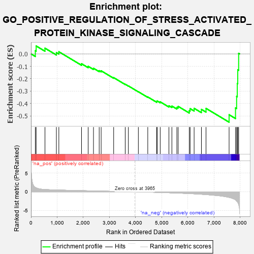
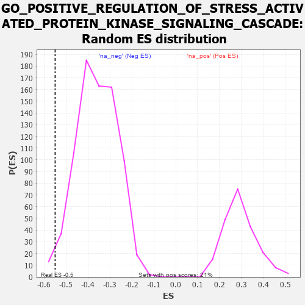

| | | Dataset | 7d |
| Phenotype | NoPhenotypeAvailable |
| Upregulated in class | na_neg |
| GeneSet | GO_POSITIVE_REGULATION_OF_STRESS_ACTIVATED_PROTEIN_KINASE_SIGNALING_CASCADE |
| Enrichment Score (ES) | -0.5498152 |
| Normalized Enrichment Score (NES) | -1.5257977 |
| Nominal p-value | 0.017811704 |
| FDR q-value | 0.16338144 |
| FWER p-Value | 1.0 |
Table: GSEA Results Summary

Fig 1: Enrichment plot: GO_POSITIVE_REGULATION_OF_STRESS_ACTIVATED_PROTEIN_KINASE_SIGNALING_CASCADE
Profile of the Running ES Score & Positions of GeneSet Members on the Rank Ordered List
| PROBE | GENE SYMBOL | GENE_TITLE | RANK IN GENE LIST | RANK METRIC SCORE | RUNNING ES | CORE ENRICHMENT | | 1 | AXIN1 | | | 166 | 1.159 | 0.0250 | No |
| 2 | WNT16 | | | 198 | 1.072 | 0.0636 | No |
| 3 | PKN1 | | | 535 | 0.619 | 0.0457 | No |
| 4 | DVL3 | | | 971 | 0.490 | 0.0103 | No |
| 5 | FZD10 | | | 1065 | 0.470 | 0.0172 | No |
| 6 | HACD3 | | | 1932 | 0.315 | -0.0794 | No |
| 7 | SYK | | | 2186 | 0.278 | -0.1002 | No |
| 8 | HIPK2 | | | 2389 | 0.247 | -0.1159 | No |
| 9 | EMC10 | | | 2607 | 0.211 | -0.1349 | No |
| 10 | SASH1 | | | 2682 | 0.201 | -0.1362 | No |
| 11 | ERN2 | | | 3160 | 0.129 | -0.1912 | No |
| 12 | STK25 | | | 3602 | 0.059 | -0.2444 | No |
| 13 | DAXX | | | 3722 | 0.038 | -0.2579 | No |
| 14 | TRAF1 | | | 4104 | -0.024 | -0.3049 | No |
| 15 | ERCC6 | | | 4464 | -0.087 | -0.3467 | No |
| 16 | TNIK | | | 4804 | -0.158 | -0.3831 | No |
| 17 | TAOK3 | | | 4823 | -0.162 | -0.3790 | No |
| 18 | FZD4 | | | 4940 | -0.186 | -0.3862 | No |
| 19 | EPHA4 | | | 5273 | -0.265 | -0.4176 | No |
| 20 | FZD5 | | | 5386 | -0.292 | -0.4201 | No |
| 21 | SPHK1 | | | 5576 | -0.339 | -0.4305 | No |
| 22 | ROR2 | | | 5626 | -0.353 | -0.4227 | No |
| 23 | FZD8 | | | 6051 | -0.490 | -0.4567 | No |
| 24 | DBNL | | | 6084 | -0.501 | -0.4409 | No |
| 25 | CDC42 | | | 6236 | -0.548 | -0.4382 | No |
| 26 | TRPV4 | | | 6515 | -0.668 | -0.4468 | No |
| 27 | PAK1 | | | 6691 | -0.757 | -0.4388 | No |
| 28 | TRAF4 | | | 7573 | -1.514 | -0.4899 | Yes |
| 29 | TRAF6 | | | 7818 | -2.157 | -0.4352 | Yes |
| 30 | TRAF2 | | | 7861 | -2.481 | -0.3423 | Yes |
| 31 | TRAF3 | | | 7886 | -2.695 | -0.2386 | Yes |
| 32 | PLCB1 | | | 7904 | -2.841 | -0.1282 | Yes |
| 33 | TRAF5 | | | 7938 | -3.448 | 0.0042 | Yes |
Table: GSEA details [plain text format]

Fig 2: GO_POSITIVE_REGULATION_OF_STRESS_ACTIVATED_PROTEIN_KINASE_SIGNALING_CASCADE: Random ES distribution
Gene set null distribution of ES for GO_POSITIVE_REGULATION_OF_STRESS_ACTIVATED_PROTEIN_KINASE_SIGNALING_CASCADE